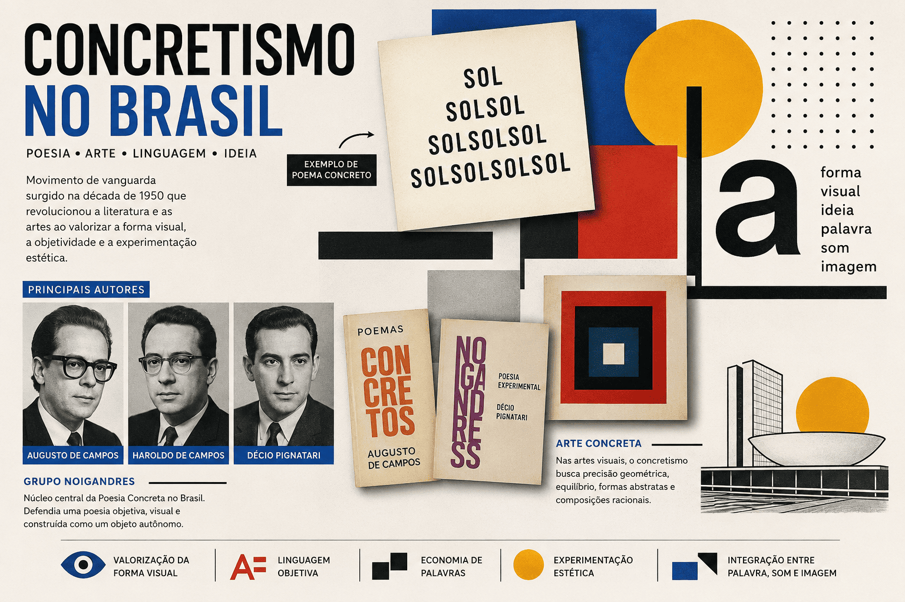

Concretismo no Brasil: origem, características, principais autores e legado
O Concretismo no Brasil foi um importante movimento artístico e literário que surgiu na década de 1950, propondo uma nova forma de expressão baseada na valorização da estrutura visual, da linguagem objetiva e da experimentação estética. Influenciado pelas vanguardas europeias e pelo avanço tecnológico do pós-guerra, o movimento rompeu com modelos tradicionais de arte e poesia, tornando-se um dos marcos da modernidade cultural brasileira.

Neste artigo, você conhecerá a origem do Concretismo, suas principais características, os autores mais importantes e sua influência na literatura e nas artes brasileiras.
O que foi o Concretismo?
O Concretismo foi um movimento de vanguarda que defendia a criação de obras construídas a partir de elementos concretos da linguagem, como palavras, sons, formas e espaços visuais.
Na literatura, especialmente na poesia, os concretistas acreditavam que o poema não deveria depender apenas do significado das palavras, mas também de sua disposição gráfica na página. Dessa forma, o aspecto visual passava a ser tão importante quanto o conteúdo verbal.
O movimento buscava eliminar excessos sentimentais e subjetivos, privilegiando a objetividade, a síntese e a experimentação formal.
Contexto histórico do Concretismo
O Concretismo surgiu em um período marcado por transformações econômicas, tecnológicas e culturais. O Brasil vivia um processo de industrialização acelerada e de modernização urbana, especialmente durante o governo de Juscelino Kubitschek.
Nesse contexto, artistas e escritores passaram a buscar novas formas de expressão compatíveis com a realidade moderna. As ideias do movimento dialogavam com:
- O avanço científico e tecnológico;
- A arquitetura moderna;
- O design gráfico;
- A comunicação de massa;
- As vanguardas artísticas europeias.
O movimento ganhou força principalmente em São Paulo, tornando-se referência para diversas manifestações artísticas brasileiras.
O surgimento da poesia concreta
A vertente literária do Concretismo ficou conhecida como Poesia Concreta.
Seu marco inicial ocorreu em 1956, durante a Exposição Nacional de Arte Concreta, realizada em São Paulo. Nessa ocasião, poetas apresentaram obras que rompiam com a estrutura tradicional dos versos.
Os poemas concretos exploravam:
- A disposição espacial das palavras;
- Recursos tipográficos;
- Relações visuais entre os elementos;
- Economia verbal;
- Efeitos sonoros e gráficos.
O poema passava a funcionar como um objeto visual, aproximando-se das artes plásticas.
Principais características do Concretismo
Valorização da forma visual
O aspecto gráfico da obra torna-se fundamental. As palavras são organizadas de maneira estratégica para produzir significados visuais.
Economia de palavras
Os textos costumam ser curtos e sintéticos, eliminando elementos considerados desnecessários.
Linguagem objetiva
O movimento evita sentimentalismos excessivos e busca uma comunicação mais direta.
Experimentação estética
Os artistas exploram novas formas de organização da linguagem, rompendo com padrões tradicionais.
Integração entre palavra, som e imagem
O poema concreto procura unir diferentes dimensões da linguagem em uma única experiência artística.
Uso do espaço em branco
O espaço da página deixa de ser apenas suporte e passa a fazer parte da construção do significado.
Principais autores do Concretismo brasileiro
Augusto de Campos
Foi um dos principais criadores da poesia concreta no Brasil. Sua obra destaca-se pela inovação formal e pelo intenso trabalho com elementos visuais e sonoros da linguagem.
Haroldo de Campos
Além de poeta, foi tradutor e crítico literário. Contribuiu significativamente para a divulgação das ideias concretistas e para o diálogo entre a literatura brasileira e a internacional.
Décio Pignatari
Importante teórico do movimento, desenvolveu reflexões sobre comunicação, linguagem e cultura de massa. Seus poemas exploram fortemente os aspectos visuais e semânticos das palavras.
Esses três autores formaram o chamado Grupo Noigandres, núcleo central da poesia concreta brasileira.
O Grupo Noigandres
Fundado na década de 1950, o Grupo Noigandres tornou-se o principal responsável pela formulação teórica e prática do Concretismo literário no Brasil.
O nome do grupo foi inspirado em uma palavra encontrada nos poemas do escritor Ezra Pound.
Os integrantes defendiam que:
- A poesia deveria ser objetiva;
- A estrutura visual era essencial;
- O poema deveria funcionar como um objeto autônomo;
- A linguagem precisava acompanhar as transformações do mundo moderno.
Concretismo nas artes visuais
O Concretismo não ficou restrito à literatura. Nas artes plásticas, o movimento também teve grande relevância.
Os artistas concretos buscavam:
- Precisão geométrica;
- Equilíbrio visual;
- Uso de formas abstratas;
- Planejamento racional da composição.
As obras evitavam representações figurativas e valorizavam estruturas matemáticas e geométricas.
Características da arte concreta
- Abstração geométrica;
- Racionalidade compositiva;
- Uso de linhas e formas simples;
- Busca pela objetividade;
- Rejeição da representação naturalista.
Diferença entre Concretismo e Neoconcretismo
| Concretismo | Neoconcretismo |
|---|---|
| Valoriza a racionalidade | Valoriza a subjetividade |
| Ênfase na geometria | Ênfase na experiência sensorial |
| Estrutura rigorosa | Estrutura mais flexível |
| Obra como objeto racional | Obra como experiência vivida |
O Neoconcretismo surgiu no final da década de 1950 como uma reação ao excesso de racionalismo presente na arte concreta.
Exemplo de poema concreto
SOLSOL
SOLSOLSOL
SOLSOLSOLSOL
Nesse caso, a disposição gráfica das palavras cria uma imagem visual associada à ideia de expansão da luz solar.
O significado não está apenas nas palavras, mas também na forma como elas ocupam o espaço da página.
A influência do Concretismo na cultura brasileira
O legado do Concretismo pode ser percebido em diversas áreas:
- Literatura contemporânea;
- Design gráfico;
- Publicidade;
- Artes visuais;
- Música experimental;
- Comunicação digital.
Muitos recursos utilizados atualmente em peças gráficas, campanhas publicitárias e produções multimídia dialogam com princípios desenvolvidos pelos concretistas.
Importância do Concretismo para a literatura brasileira
O Concretismo representou uma das experiências mais inovadoras da literatura nacional. Ao ampliar os limites da linguagem poética, o movimento contribuiu para:
- Renovar a poesia brasileira;
- Integrar literatura e artes visuais;
- Estimular novas formas de leitura;
- Aproximar a produção artística das transformações tecnológicas do século XX.
Sua influência permanece presente em diversos movimentos contemporâneos que exploram a interação entre texto, imagem e tecnologia.
Conclusão
O Concretismo no Brasil foi um movimento revolucionário que transformou a maneira de compreender a arte e a literatura. Ao valorizar a visualidade, a síntese e a experimentação formal, os concretistas criaram novas possibilidades de expressão e deixaram uma marca duradoura na cultura brasileira.
Com autores como Augusto de Campos, Haroldo de Campos e Décio Pignatari, o movimento consolidou-se como uma das mais importantes vanguardas artísticas do país, influenciando gerações de escritores, artistas e designers até os dias atuais.
Perguntas frequentes sobre o Concretismo
O que é o Concretismo?
É um movimento artístico e literário que valoriza a estrutura visual da obra, a objetividade da linguagem e a experimentação formal.
Quando surgiu o Concretismo no Brasil?
O movimento ganhou destaque na década de 1950, especialmente a partir de 1956.
Quem foram os principais autores do Concretismo brasileiro?
Augusto de Campos, Haroldo de Campos e Décio Pignatari.
O que caracteriza a poesia concreta?
A integração entre palavra, imagem e som, além da valorização da disposição gráfica dos elementos na página.
Qual a diferença entre Concretismo e Neoconcretismo?
O Concretismo enfatiza a racionalidade e a geometria, enquanto o Neoconcretismo valoriza a experiência sensorial e a subjetividade.
Referências
- CAMPOS, Augusto de. Obras e estudos sobre poesia concreta.
- CAMPOS, Haroldo de. Ensaios, traduções e reflexões sobre linguagem e experimentalismo poético.
- PIGNATARI, Décio. Teoria da comunicação e poesia concreta.
- Grupo Noigandres. Manifestos e textos fundamentais do Concretismo brasileiro.
- POUND, Ezra. Influência estética e conceitual na formação do Grupo Noigandres.
Explore Outros Conteúdos
Continue seus estudos acessando outras seções do site Mestre Kira: